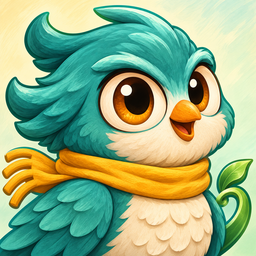

Grumpy Wings — الأجنحة المشاكسةEnglishالعربيةFrançais · Privacy
Support
Need help? Write to ohaigoune@gmail.com. We answer in Arabic, French or English, usually within 48 hours. Please mention your device model and the level number.
How to play
Drag back from the bird on the slingshot, aim with the dotted preview and release. Tap the screen while the bird is flying to use its power. Pinch to zoom; retry any level instantly.
Restore the full game
Settings → Restore purchases (or "Restore purchases" on the unlock screen), signed in with the same Apple ID used for the purchase.
Refunds
Purchases and refunds are handled by Apple at reportaproblem.apple.com.
Language and sound
Settings → Language (15 languages). Sound, music, haptics, camera shake and reduce motion are in Settings too. Turn on "Sound in silent mode" to hear the game when the ring/silent switch is off.
Start over
Settings → Reset progress erases stars and scores and locks the levels again. It does not remove your purchase.
الدعم
تحتاج مساعدة؟ راسلنا على ohaigoune@gmail.com، نجيب بالعربية أو الفرنسية أو الإنجليزية خلال 48 ساعة غالبًا. اذكر نوع جهازك ورقم المستوى.
طريقة اللعب
اسحب الطائر إلى الخلف من القاذف، وصوّب بمساعدة النقاط ثم أفلته. المس الشاشة أثناء طيرانه لتفعيل قدرته. كبّر بإصبعين، وأعد أي مستوى فورًا.
استعادة اللعبة الكاملة
الإعدادات ← استعادة المشتريات (أو من شاشة الفتح)، بنفس حساب Apple المستعمل في الشراء.
الاسترداد
تتولى Apple الشراء والاسترداد عبر reportaproblem.apple.com.
اللغة والصوت
الإعدادات ← اللغة (15 لغة). وفي الإعدادات أيضًا الصوت والموسيقى والاهتزاز واهتزاز الكاميرا وتقليل الحركة، وخيار «الصوت حتى في الوضع الصامت».
البدء من جديد
الإعدادات ← إعادة ضبط التقدّم تمسح النجوم والنتائج وتقفل المستويات، ولا تمس الشراء.
Assistance
Écrivez à ohaigoune@gmail.com (réponse en arabe, français ou anglais, généralement sous 48 h). Restaurer le jeu complet : Réglages → Restaurer les achats. Remboursements : gérés par Apple sur reportaproblem.apple.com. Langue et son : dans les Réglages. Recommencer : Réglages → Réinitialiser la progression (l'achat est conservé).
Last updated: 2026-11-23 · Grumpy Wings 1.0